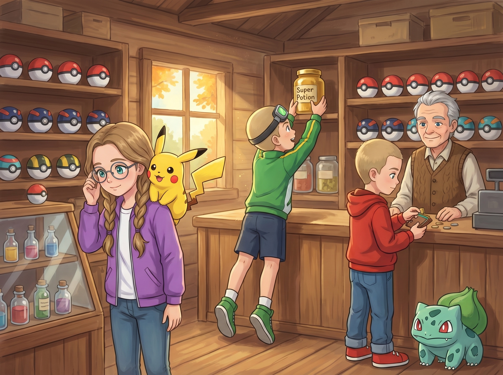
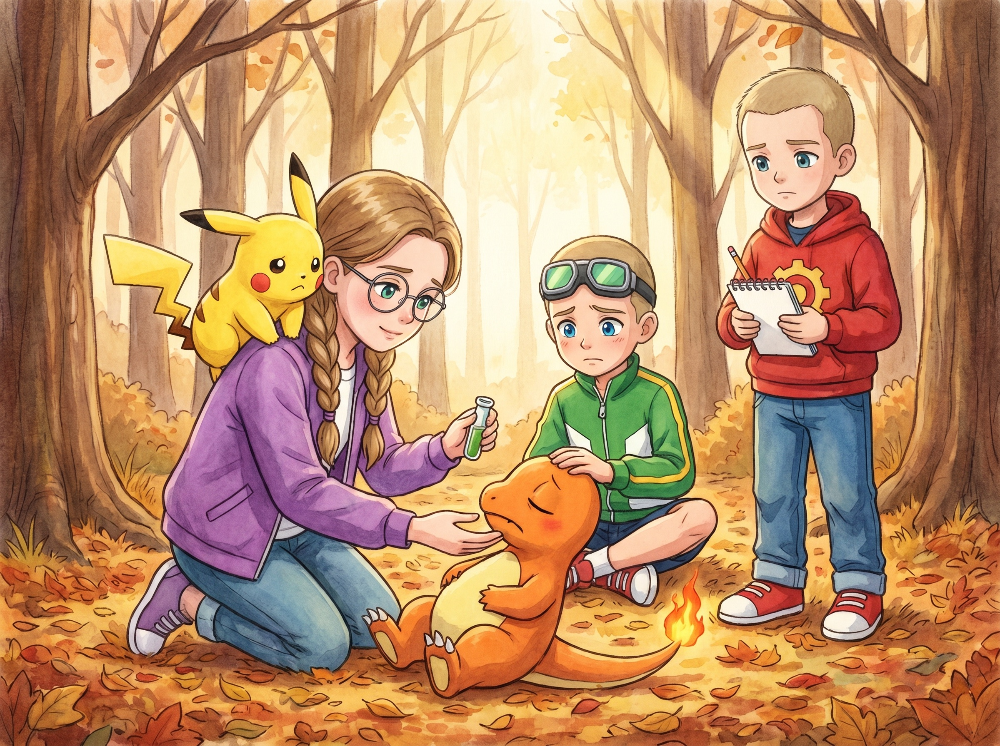
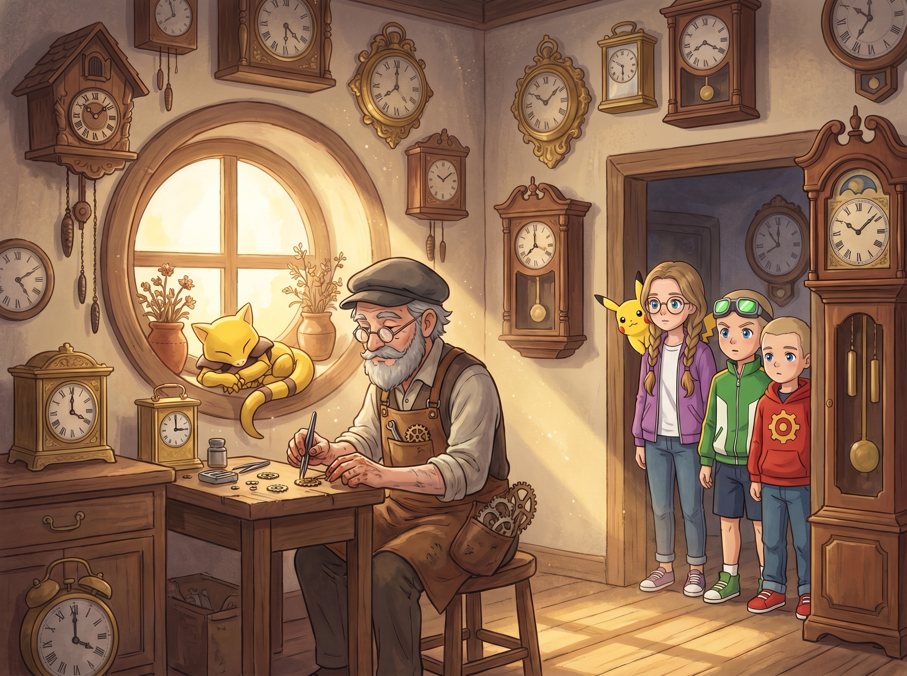
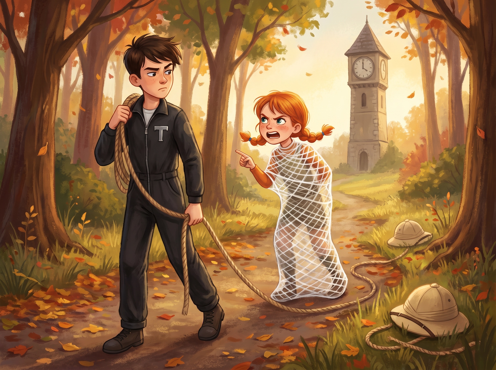
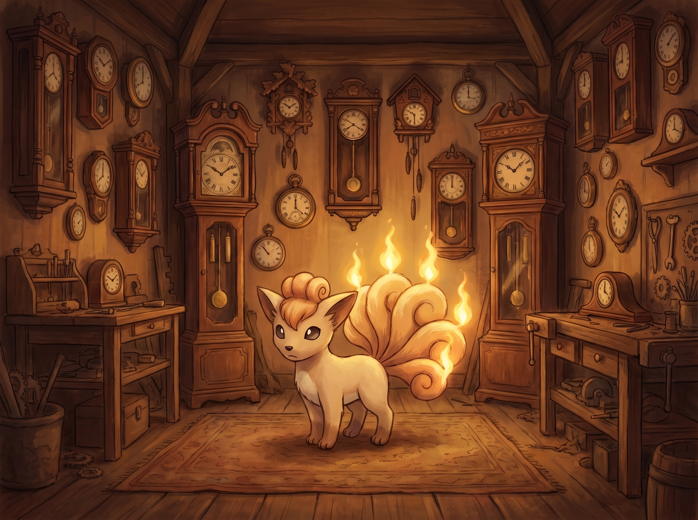
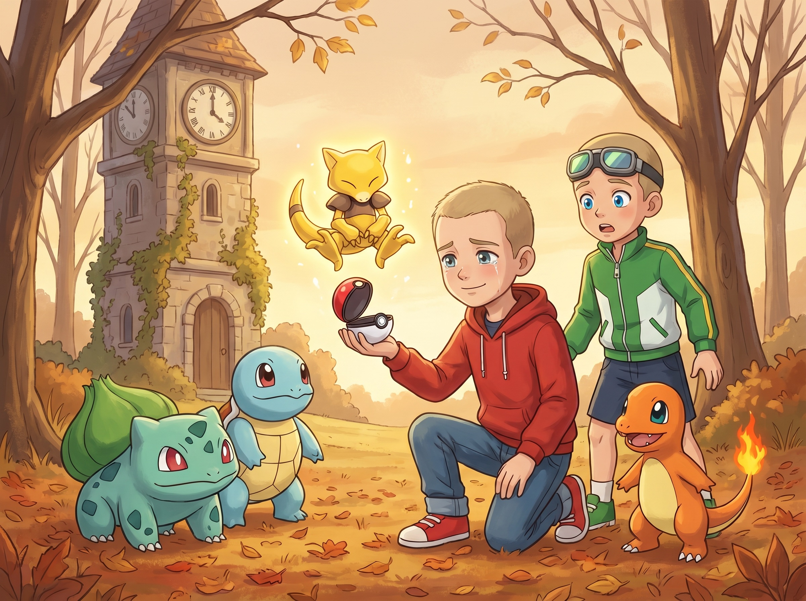
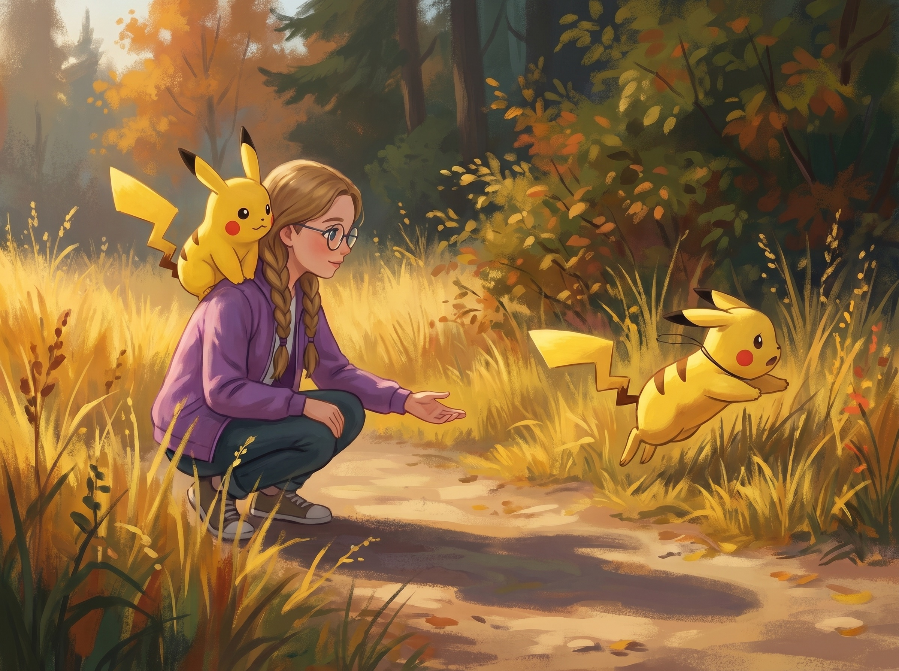

Сезон 1
Эпизод 10. «Неуловимый Абра»
Покупки и яд
Утро было прохладное. Над лесом висел туман, листья шуршали под ногами — сухие и рыжие. Ноябрь.
Посёлок по дороге к Громовому Городу был маленький: несколько домов, колодец и деревянный магазин с вывеской «ВСЁ ДЛЯ ТРЕНЕРОВ». На крыльце дремал старый Сквиртл (Squirtle) — чужой, не Ромуса. Один глаз приоткрыл, посмотрел на героев, закрыл обратно.
Внутри пахло сухими травами и старым деревом. На полках стояли ряды покеболов — обычные красно-белые, тёмно-синие, какие-то полосатые. У стеклянной витрины — стеклянные бутылочки с разноцветной жидкостью.
— Тренеры, — сказал хозяин. Седой, в шерстяном жилете. — Турнир Грома?
— Готовимся, — кивнул Ромус.
Пикачу (Pikachu) на плече Кристи поднял уши, посмотрел на хозяина. Хозяин кивнул Пикачу — серьёзно, как взрослому. Пикачу кивнул в ответ. Один раз.
Кристи уже стояла у витрины с лекарствами. Поправила очки одним движением.
— Мне три покебола. Два антидота. И два поушна.
— Зачем нам антидот? — Макстер заглянул через её плечо. — У нас всё в порядке.
— «В порядке» — это до того момента, как уже не в порядке, — спокойно ответила Кристи.
Ромус достал кошелёк, пересчитывал монеты. Бульбазавр (Bulbasaur) стоял у его ноги — тихо, серьёзно, как обычно.
Макстер обходил полки. Гоглы на лбу качнулись, когда он наклонился к большой банке с золотистой жидкостью.
— А это что?
— Супер-поушн, — ответил хозяин. — Дороже втрое.
— Берём!
— Ставь обратно, — не поднимая глаз от монет, бросил Ромус.
— Но он золотистый.
— Поставь.
Макстер с грустью вернул банку на полку.
Хозяин складывал покупки в сумку. Подмигнул:
— Антидот — это к будущему. Тренеры всегда покупают антидот после того, как уже отравились. Я продаю до.
Кристи коротко кивнула.

Когда они вышли, солнце уже поднялось, и туман стал реже. Дорога вела через осенний лес. Под ногами хрустело. Пахло хвоей и чем-то сладким — где-то лопались последние яблоки-падальцы.
Кристи спотыкнулась о корень. Не упала — просто запнулась. Мальчики посмотрели на её ботинки.
Фиолетовые. Осенние. С круглыми носками.
— Ты опять в этих, — сказал Макстер.
— Это мои любимые.
— Но сейчас ноябрь.
— Именно. Это не упрямство — это потому что я их люблю.
Макстер открыл рот, чтобы сказать что-то ещё, и тут же его закрыл. В кустах слева что-то двинулось.
Большой голубой покемон с рогом на голове и шипами на спине. Глаза красные. Стоит, наклонив голову. Смотрит.
— Нидорино (Nidorino), — выдохнул Ромус и быстро открыл блокнот. — Ядовитый тип. Внимание, у него…
— Чармандер (Charmander), со мной! — Макстер уже выпустил покебол.
Чармандер появился в красной вспышке. Хвост горел ровно, ярко.
— Огонь!
Чармандер выдохнул короткую струю пламени. Нидорино пригнулся — пламя прошло над его рогом и опалило куст за спиной. Куст задымился.
— Ещё!
Нидорино рванул вперёд. Опустил голову. Рог попал Чармандеру в плечо — но это была не царапина. Маленькая фиолетовая искра осталась на коже. Чармандер шипнул, отступил на шаг.
Хвост чуть потускнел.
— Макстер, отступай! — Кристи уже снимала рюкзак с плеча. — Это яд!
— Ещё чуть-чуть! Чармандер, Ember!
Чармандер набрал воздух. Из горла вышло только короткое «пых». Тонкая струйка дыма. Хвост стал ещё тусклее.
Чармандер дрожал.
Макстер замер. Увидел дрожь. И в эту секунду что-то внутри него резко остыло.
— Чармандер, назад. — Голос вышел тихий. — Назад. Сейчас.
Красная вспышка. Чармандер исчез в покеболе.
Нидорино рыкнул из кустов, но не пошёл за ними. Видимо, ему хватило.
Они отошли шагов на сто, до маленькой полянки. Кристи уже доставала из сумки маленькую стеклянную бутылочку с зелёной жидкостью.
— Выпускай.
Макстер выпустил Чармандера. Тот лежал на боку. Хвост едва тлел — тонкий, слабый огонёк.
Кристи присела рядом.
— Открой пасть, маленький.
Чармандер слабо приоткрыл. Кристи капнула несколько капель антидота на язык. Потом мягко закрыла ему пасть и подержала.
— Глотай.
Чармандер сглотнул.
Несколько секунд ничего. Потом — Чармандер моргнул. Хвост чуть ярче. Дрожь ушла.
Кристи открыла вторую банку — поушн, в виде густого крема — и осторожно нанесла на плечо, где была отметина от рога.
Чармандер выдохнул. Хвост горел ровно, как должен. Тихо: «Чар.»

Макстер сидел рядом и не говорил. Положил руку на голову Чармандеру.
Я бросился первым. Снова. И снова — мой покемон чуть не…
— Хорошо, что Кристи настояла, — тихо произнёс Ромус.
Кристи закрутила крышку поушна и убрала обратно в сумку.
Чармандер встал. Аккуратно потянулся. Тихо тронул лапой её ладонь.
Макстер сидел ещё немного. Потом встал, отряхнулся.
— Пошли.
Башня
Через час лес стал реже, и за поворотом из тумана выступила башня.
Серая, каменная, не очень высокая — всего три этажа. Окна разные: одно круглое, одно квадратное, одно вообще треугольное. Над крышей торчала тонкая металлическая труба — флюгер давно отвалился.
Дверь была приоткрыта.
— Странное место, — тихо произнесла Кристи.
— Я хочу посмотреть, — Ромус уже шёл к двери.
Пикачу на её плече прижал уши. Не от страха — от тишины. В башне было слишком тихо для лесной поляны.
Внутри пахло пылью, маслом и старым деревом. Было очень тихо. На стенах висели десятки часов — но ни одни часы не тикали. Все стояли. Стрелки замерли в разных позициях.
На стенах их было очень много — деревянные, латунные, с кукушками и без, маленькие и огромные напольные. Все остановившиеся.
За маленьким столом сидел человек. Старик. В фетровой шапке без отворота и кожаном переднике с маленькими карманами для шестерёнок. Пальцы тонкие, испачканные машинным маслом. На носу — круглые очки с откидной лупой. Перед ним — россыпь крошечных шестерёнок и пинцет в руке.
Он поднял голову.
— А, гости. Заходите. Только тихо. Он спит.
Старик кивнул куда-то в сторону. Все трое посмотрели туда.
На подоконнике — между двумя глиняными горшками с засохшими цветами — свернулся золотистый комочек. Длинный хвост, сложенные лапки, спокойное лицо.
Абра (Abra).
— Ваш? — Ромус подошёл ближе, но не очень близко.
— Не мой, — старик покачал головой. — Пришёл сам. Зашёл в окно. Посмотрел на меня. Лёг. С тех пор тут.
— Давно?
— Месяц. Может, два. Я плохо помню.
Кристи присела у стола, посмотрела на разобранные шестерёнки.
— А почему все часы стоят?
Старик задумался. Взял пинцетом одну шестерёнку. Покрутил.
— Я… забыл. Когда-то я знал, зачем построил эту башню. И эти часы. Что-то важное было. А теперь не помню.
— Совсем не помните?
— Иногда вспоминаю. Когда он спит вот так. — Старик кивнул на Абру. — Иногда я просыпаюсь утром, и в голове — картинка. Не моя. Как будто он мне её показал во сне.
— И?
— Утром забываю. Но когда он рядом — на полминуты вспоминаю что-то очень важное. Потом снова забываю.
Ромус что-то записал в блокноте. Очень быстро.
В этот момент луч солнца через круглое окно медленно пополз по подоконнику. Тёплая полоска света подобралась к лапе Абры — и едва коснулась её.
Абра не открыл глаз. Просто исчез — и тут же появился под столом, в самой густой тени. Снова свернулся.
Ромус замер с карандашом в воздухе.
— А поймать его кто-то пробовал? — спросил Макстер.
Старик хмыкнул.
— Попробуй. Он Абра. Он телепортируется при малейшем шорохе. Ловят только Кадабру или Алаказема. А Абры — это призраки.

Макстер стоял молча. Хотел бы попробовать — но Чармандер только что отравился. Макстер посмотрел на покебол на поясе и остановил себя.
В этот момент снаружи раздался топот. Какой-то спор. Двое голосов перебивали друг друга.
— Тише ты! Его нельзя будить!
— Сам тише!
Дверь распахнулась. В проёме встали двое — в одинаковых коричневых комбинезонах с большими карманами, в шляпах-сафари на верёвочных ремешках. На плечах — большие самодельные сетки на пружинах.
— НЕ ДВИГАТЬСЯ! — рявкнул Дарк. — Мы охотники за редкими покемонами! И этот — НАШ!
Фокс зашептала: «Тише ты, его нельзя пугать.»
Дарк понизил голос: «Не двигайтесь. Мы… охотники. С большими сетками.»
Старик медленно поднял пинцет.
— Опять кто-то.
И снова занялся шестерёнками. Не вставая.
Дарк прицелился сеткой в Абру и бросил.
Сетка пролетела через комнату — мимо.
Абра появился на люстре над их головами — старой, медной, с потухшими свечами. Свернулся между завитками и закрыл глаза.
— Я почти попал! — Дарк дёрнул верёвку, к которой была привязана сетка. Сетка послушно вернулась к нему по воздуху.
— Это не «почти», — сказала Фокс. — Это «совсем не».
— Сейчас попаду. — Дарк размахнулся ещё раз. — Я разогрелся.
И бросил.
Абра исчез прежде, чем сетка пролетела половину пути. Появился на полке с маленькими карманными часами. Снова свернулся.
А сетка — пустая, без Абры — медленно опустилась прямо на Фокс, накрыв её с головой.
Тишина.
Из-под сетки раздался очень спокойный голос:
— Дарк.
— Что?
— Я в сети.
— А, точно. Сейчас.
Дарк попытался стащить сетку, но та оказалась липкая изнутри (Дарк сам потом не вспомнил, зачем намазал клеем для прочности). Чем больше Фокс барахтилась, тем сильнее запутывалась.
— ДАРК!
— Я СТАРАЮСЬ.
— ТЫ НА КЛЕЙ ЕЁ НАМАЗАЛ?!
— ДЛЯ ПРОЧНОСТИ!
— ДЛЯ КАКОЙ ПРОЧНОСТИ?!
Старик за столом поднял пинцет. Ровно сказал, не вставая:
— Опять кто-то.
Тут Дарк, в попытке распутать Фокс, сам зацепился за подвесные часы с гирями. Дёрнул. Часы посыпались со стены — целая стайка. Грохот, звон.
Через несколько минут герои осторожно вышли из башни.
Дарк уже волоком тащил Фокс по тропе — она всё ещё была завёрнута в липкую сетку, как огромный кокон. Что-то ворчал ей в спину. Фокс ворчала в ответ. Шляпы-сафари остались валяться в траве рядом с обломками часов. Через минуту Дарк и Фокс скрылись за поворотом.

Кристи, Макстер и Ромус переглянулись — и засмеялись.
— Какой ловкий, — выдохнул Макстер, оглядываясь на окно башни. На полке между часов золотистой запятой опять спал Абра. — Я даже не понял, как он это делает.
— Просто исчезает и появляется, — кивнул Ромус. — Покемон-призрак.
— И никого не обижает, — добавила Кристи. — Просто уходит.
План — и Макстер
На небольшой поляне неподалёку от башни Ромус сел прямо на сухой пень. Открыл блокнот.
Бульбазавр стоял рядом. Сквиртл появился из покебола — Ромус выпустил его на всякий случай, и тот сразу пошёл проверять траву по периметру. Дежурный, как всегда.
Ромус смотрел на башню сквозь голые ветки. В одном из окон было видно полку — на ней, золотистой запятой, опять спал Абра.
Молчал минуту. Глаза двигались. Что-то считал.
Кристи присела рядом, не мешая. Пикачу у неё на плече тихо моргнул.
Через пару минут Ромус произнёс ровно:
— Подожди. Тут есть закономерность.
Макстер сразу сел рядом.
— Какая?
— Когда сетка летела к Абре — он телепортировался. Но не куда попало.
— А куда?
— В тень. Каждый раз — в самую тёмную точку комнаты. Сначала в угол под полку. Потом — на стопку часов в тени. Потом — под стол, когда солнечный луч до него дотронулся. — Ромус показал в блокноте маленькую схему: квадратик-комната, три точки. — Это его инстинкт. Он спит и уходит от света. От любого яркого или тёплого пятна.
Кристи раскрыла Покедекс. Тихо прочитала:
— «Абра спит почти весь день. При малейшей опасности телепортируется в защищённое место. Чувствителен к свету и теплу.» — Закрыла Покедекс. — Значит, его нельзя пугать. Надо, чтобы он сам выбрал безопасное место. А мы знаем, где это.
— И что?
— А то, что мы можем предсказать куда он телепортируется. И положить туда лозы.
Бульбазавр поднял голову. Луковица слегка раскрылась. Он понял.
Кристи поправила очки.
— Хорошо. А как заставить его телепортироваться, если он спит? Громкий звук? Молния?
— Слишком резко. Он телепортируется куда угодно, не в правильную точку.
Молчание.
Макстер думал. Рассеянно крутил ремешок гоглов на лбу.
Думать — не моя форма. Но иногда получается.
— У меня есть мысль.
Все посмотрели на него.
— Помните, как мы запустили Дарка и Фокс собственным шаром? Чармандер дал Ember под ноги. Горячий воздух подбросил их вверх. Тёплый воздух поднимает.
— Помним.
— Так вот. Не Ember в Абру. Ember рядом.
Ромус поднял карандаш.
— Объясни.
— Тёплый воздух пойдёт через комнату. Абра почувствует тепло.
Кристи подняла глаза от Покедекса.
— И уйдёт от него.
— В тень.
— В холодную тень. Туда, куда нам нужно.
Ромус замолчал. Прокрутил идею в голове. Тёплый воздух → холодная тень → лозы. Сходится с тем, что Покедекс говорит.
Потом — медленно — кивнул.
— Это работает.
— Чармандер ослаблен, — сказала Кристи. — Антидот и поушн помогли, но не на полную силу.
— Маленький Ember, — ответил Макстер. — Один. Не атака — намёк.
Повернулся к Чармандеру в покеболе. Выпустил.
Чармандер вышел уже с ровным хвостом. Посмотрел на Макстера.
— Дружище. Можешь? Один маленький. Тёплый ветер. Не пламя.
Чармандер посмотрел на свой хвост. Ровный огонёк. Кивнул — медленно, серьёзно.
Ромус разложил план как тренер на доске.
— Кристи — самое важное. Ты заходишь внутрь башни с Сикстейлс. Тихо. Не разбуди Абру. Пусть Сикстейлс зажжёт маленькие огоньки в каждом углу — мягко, как лампадки. В башне не должно остаться ни одного тёмного, холодного места. Понимаете?
— Тогда у Абры не будет куда телепортироваться внутри, — кивнула Кристи. — И ему останется только наружу.
— Под клён. Где самая холодная тень. Где ждут лозы. — Ромус показал в блокноте линию-стрелку. — Бульбазавр — в той тени. Готов. Сквиртл — рядом. Если Абра в лозах — короткий Water Gun, успокоить, не сильный. Макстер с Чармандером — здесь, у окна. Тёплый ветер пойдёт внутрь башни. Абра проснётся, почувствует тепло, оглянется — а внутри светло. Уйдёт в единственную холодную тень. К нам.
Все заняли позиции.
Кристи тихо вошла в башню. Старик-часовщик посмотрел на неё, поднял палец к губам и кивнул на Сикстейлса (Vulpix), которого Кристи только что выпустила. Сикстейлс посмотрела на хозяйку — поняла без слов. Шесть хвостов чуть приподнялись — и на каждом загорелся маленький тёплый огонёк, мягкий, как от свечки.
Сикстейлс пошла по комнате тихими шагами. У каждого тёмного угла она останавливалась и наклонялась — огоньки на хвостах освещали полку, столешницу, нишу под стулом, дальний шкаф с маятниковыми часами. Тени отползали.
Через минуту в башне не осталось ни одного по-настоящему тёмного места.

Бульбазавр устроился под клёном. Лозы лежали на земле тонким зелёным кругом. Ждали.
Сквиртл стоял рядом, как пожарный. Увидел Чармандера. Вздохнул и на всякий случай набрал воды в щёки.
— Не надо, — шепнул Ромус.
Сквиртл медленно выпустил воду обратно. Очень недовольно.
Макстер с Чармандером — на поляне, точно по линии, которую показал Ромус.
Тишина. Только листья шелестят.
Ромус посмотрел на Макстера. Кивнул.
Макстер тихо:
— Чармандер. Тёплый ветер.
Чармандер набрал воздух. Не пламя — тёплое дыхание. Воздух перед его мордой задрожал, как над дорогой летом. Тёплая волна пошла через окно башни. Внутрь.
Прошло две секунды.
На полке — золотистый комочек шевельнулся. Поднял голову. Морщинки на лбу. Прищурился.
И исчез.
Появился — ровно в холодной тени под клёном.
Сел. Поморгал. Не понял, как сюда попал.
В этот же миг лозы Бульбазавра сжались — мягко, без рывка — обхватили Абру за лапы и тельце. Не больно, не туго. Просто — держим.
Абра открыл глаза. Посмотрел вниз. На лозы. На Ромуса.
Сквиртл уже целился — но Ромус поднял руку.
— Не надо.
Сквиртл опустил голову. «Сквир.»
Ромус подошёл. Спокойно. Присел на одно колено.
— Привет.
Абра молчал. Глаза золотистые, как у кошки в темноте.
И вдруг — у Ромуса в голове картинка. Не его. Чёткая, как сон. Ромус — взрослый — сидит за столом и чинит крошечные часы. Шестерёнки разложены рядом, пинцет в руке. Лоб нахмурен. Он смотрит на часы и не может вспомнить, зачем их чинит.
Точно как старик в башне.
Ромус достал покебол. Положил его себе на ладонь, но не бросил.
— Если не хочешь — телепортируйся. Я пойму.
Лозы Бульбазавра медленно разжались. Абра сидел свободно. Мог исчезнуть в любую секунду.
Он посмотрел на старика. Старик коротко кивнул.
Абра посмотрел на Ромуса.
И исчез.
Тишина.
— Ну вот! — Макстер вскинул руки. — Не надо было давать ему выбор! Зачем ты ему сказал «телепортируйся»?! Он и телепортировался!
Ромус не ответил. Плечи опустились. Покебол всё ещё лежал у него на ладони, но Ромус смотрел не на покебол — он смотрел в ту точку, где только что сидел Абра. Лицо стало тише обычного.
Кристи у двери башни тоже замерла. Сикстейлс рядом с ней моргнула — огоньки на хвостах не шевелились.
Десять секунд. Двадцать.
Тридцать.
И в этот момент прямо перед Ромусом, точно на том же самом месте, где только что сидел Абра, золотистая вспышка.
Абра. Снова сидит. Глаза золотистые, спокойные. Смотрит на Ромуса. И — медленно — кивает.
Один раз.
Ромус выдохнул так, как будто всё это время не дышал.

— Тогда… готов?
Абра улыбнулся и кивнул.
Ромус мягко нажал на кнопку покебола. Красная вспышка. Покебол качнулся раз. Второй.
Щёлк.
Тишина.
Старик в дверях коротко улыбнулся.
Ромус поднял покебол. Долго смотрел на него.
Потом обернулся.
Макстер стоял рядом. Чармандер у его ноги — хвост горит ровно, спокойно.
Ромус посмотрел на Макстера. Не сказал ничего. Просто кивнул.
Макстер тихо:
— Это ты поймал.
— Это мы, — ответил Ромус.
Ромус ещё постоял. Покебол в его ладони слегка качнулся. Раз. Второй. И снова.
И в голове у Ромуса — снова картинка. Тёплая, тихая. Старик за столом с часами.
Ромус понял.
Он обернулся. Старик стоял в дверях — пинцет в руке, передник в шестерёнках. Смотрел.
Ромус подошёл. Выпустил Абру обратно.
— Хорошо. Один раз. Перед тем как мы уйдём.
Абра появился у его ног. Огляделся. Подошёл к старику — мягко, как будто не торопился. Старик медленно опустился на одно колено и протянул ладонь — тонкие пальцы в машинном масле, ладонью вверх. Абра коснулся её лапой.
Старик закрыл глаза.
Минуту никто не двигался. Сикстейлс у двери погасила огоньки на хвостах. Стало совсем тихо.
Потом старик открыл глаза. Улыбнулся — неожиданно молодо.
— Я вспомнил.
Никто не спросил «что».
Абра посмотрел на старика. Кивнул. И вернулся к Ромусу — сел у его ноги.
Старик поднялся, поправил передник. Тихо сказал:
— Береги его.
Ромус кивнул.
— Он сам всех бережёт.
Вернул Абру в покебол.
Радость и тень
Они шли по дороге обратно к развилке. Бульбазавр впереди. Сквиртл заходил вперёд-назад — проверял путь, как всегда. Чармандер шёл рядом с Макстером, Пикачу сидел на плече Кристи.
Ромус нёс покебол Абры в кармане. Не выпускал.
— Пусть отдохнёт. Он давно так не двигался.
Макстер шёл рядом с Ромусом. Молчал чуть дольше обычного. Потом:
— Скажу тебе странное. Ты ведь сам его поймал. В конце.
— Сам.
— Тёплый воздух его выгнал, да. Но вернулся он уже к тебе. Не ко мне.
— К тебе он бы и не пришёл, — тихо сказал Ромус. — Это я с ним разговаривал.
— Ага. — Макстер кивнул. Помолчал. — И знаешь что? Я всё равно обрадовался так же сильно, как будто это я его поймал. Это нормально?
Кристи сзади тихо:
— Это потому что Ромус — друг.
Макстер промолчал. Подобрал с дороги палку. Покрутил.
Ромус тихо:
— Я тоже так радуюсь, когда ты побеждаешь.
— Серьёзно?
— Помнишь Пиджеотто (Pidgeotto)?
— Помню.
— Я тогда записал в блокноте три раза подряд: «Пиджеотто. Поймал. Поймал. Поймал.» Я обычно так не делаю.
Макстер фыркнул. Кристи едва сдержала смех.
Шли молча. Только листья шуршали.
Может, не так важно — быть первым. Важно рядом с кем!
К вечеру они дошли до Покемон-центра — маленькое здание у тропы, с красной крышей и мягким светом из окон. Медсестра Джой посмотрела Чармандера, кивнула: «Антидот вы дали правильно. Поушн тоже. Через ночь будет как новый.»
Чармандер довольный устроился на тёплой подушке. Покебол Катерпи Кристи положила рядом — пусть тоже отдохнёт у тёплого света.
Ночь в Покемон-центре прошла тихо. Только за окном иногда шуршали ветки — будто кто-то большой пролетал над лесом.
В то же самое время, далеко от Покемон-центра, на лесной поляне у маленького костра — Дарк и Фокс. Без шляп-сафари (бросили у башни вместе с липкой сеткой). В обычных чёрных комбинезонах с серебряной «Т». Фокс всё ещё отчищала с волос остатки клея.
Перед ними — клетка-сетка. В клетке — пойманный Раттата (Rattata), дикий, маленький, с серой шерстью. Трясёт прутья.
Дарк держал в руке маленький чёрный ошейник с красной лампочкой.
— Сегодня мы тестируем устройство Командора, — важно произнёс он. — Маленький ошейник. Для контроля.
Фокс читала с планшета:
— «Питание: пять дней. Затем нужна подзарядка.»
— А собирал кто? — Фокс подняла глаза от планшета.
— Собирал я. Между прочим, сам. Каждый винтик. — Дарк гордо ткнул себя в грудь.
— Тогда я бы написала на коробке «пять минут».
— ОБИДНО.
— Открой клетку.
Фокс открыла. Дарк потянулся к Раттате. Раттата куснул его за палец.
— АЙ.
— Аккуратнее.
— Я АККУРАТНЕЕ НЕ МОГУ, ОН КУСАЕТСЯ.
Со второй попытки Дарк надел ошейник на Раттату. Лампочка мигнула: раз, два — стала постоянной красной. Раттата замер. Глаза стали пустыми, будто он забыл, зачем только что кусался.
Фокс: «Раттата, сидеть.» Раттата сел.
«Стоять.» Стоит.
«Танцевать.» Раттата начал медленно покачиваться из стороны в сторону.
Дарк ликовал.
— РАБОТАЕТ! Командор был прав!
Фокс смотрела на часы.
— Три минуты.
— Танцуй веселее.
Раттата качался.
Через пять минут лампочка стала мигать. Реже. Реже.
Внутри ошейника что-то тихо щёлкнуло — будто отвалился крошечный винтик.
Погасла.
Раттата моргнул. Посмотрел на ошейник на своей шее. Понял, что у него на шее. И так посмотрел на Дарка, что Дарк сделал шаг назад.
И бросился в кусты прямо со всего разбега. Унося на шее теперь уже мёртвый ошейник.
— КУДА?! — Дарк прыгнул за ним. — Это собственность Командора!
Треск веток. Дарк в кустах. Дарк выходит из кустов — в волосах ветка, в руках пусто, на лбу царапина.
Фокс села у костра. Подперла подбородок ладонью.
— Дарк.
— Что?
— Командор сказал — пять дней.
— Я знаю.
— А продержалось — пять минут.
— Это аккумулятор виноват.
— Это ты виноват. Это ты собирал.
— Аккумулятор внутри.
— А винтики снаружи. Кривые. Командор будет в ярости.
— Я скажу что мы потеряли его в бою.
— В каком бою?
— В каком-нибудь.
— А если кто-то спросит, с кем дрались?
— Никто не спросит.
— А если спросит?
Дарк молчал.
Лампочка где-то в кустах слабо мигнула. Раз. Два. И — погасла.
Утро было яркое. Солнце пробивалось сквозь голые ветки косыми полосами. Герои уже шли по тропе к Громовому Городу.
Высоко над лесом, где-то очень высоко, бесшумно прошла тень. Большая. Крылатая. Никто из героев не поднял голову. Только Иви (Eevee) у ноги Кристи на секунду насторожил уши — и тут же расслабился.
Кристи поправила куртку. Сжала в кармане серебряный камень — тот, что нашла у опушки Серебряного леса и хранила с того дня. Тёплый. Может, чуть теплее, чем вчера. Может, кажется. Положила обратно.
Записала что-то в Покедексе про Абру. Ромус нёс его покебол в кармане — тёплый, как маленькое сердце.
Слева, в траве, что-то мелькнуло.
Жёлтое.
Маленькая фигурка. Дикий Пикачу. Стоял в траве. Смотрел на героев большими тёмными глазами.
Пикачу Кристи на её плече сразу выпрямился. Ушки навострились.
— Пика?
Кристи присела. Очень медленно. Очень тихо:
— Привет.
Дикий Пикачу прижал уши. Сделал шаг назад.
— Мы не обидим. Честно.
Пикачу смотрел. На Пикачу Кристи. Потом — на её фиолетовую куртку с покеболом.
И вдруг — прижал уши плотно к голове, как будто увидел что-то страшное. Развернулся. Бросился в кусты и исчез.

Только трава качнулась.
Тишина.
Пикачу Кристи дёрнул хвостом. Посмотрел вслед. Тихо:
— Пика?
Кристи медленно встала. Поправила очки.
— Странно.
— Что? — Макстер подошёл.
— Они в этих лесах обычно не пугливые.
Ромус посмотрел туда, куда убежал Пикачу. Долго.
— И ещё, — тихо сказала Кристи. — На шее у него что-то было. Тёмное. Я не успела рассмотреть.
— Может, листок? — спросил Макстер.
— Может быть.
Кристи закрыла Покедекс. Положила в карман. Не смотрела на мальчиков.
Чуть-чуть постояла.
— Пошли.
Они пошли дальше по тропе. Солнце поднималось. Громовой Город был уже близко.
Продолжение — в Эпизоде 11: «Громовой Город».
Урок этого эпизода
Не так важно быть первым — важно, чтобы рядом были друзья, которые радуются твоим успехам.